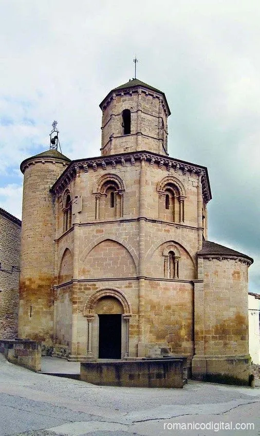
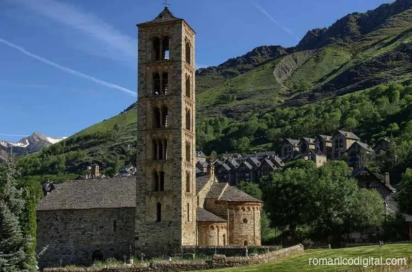
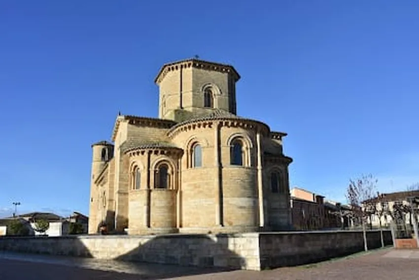
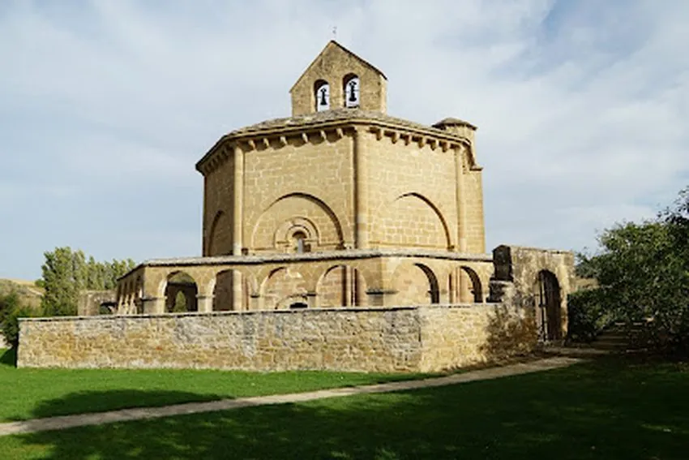
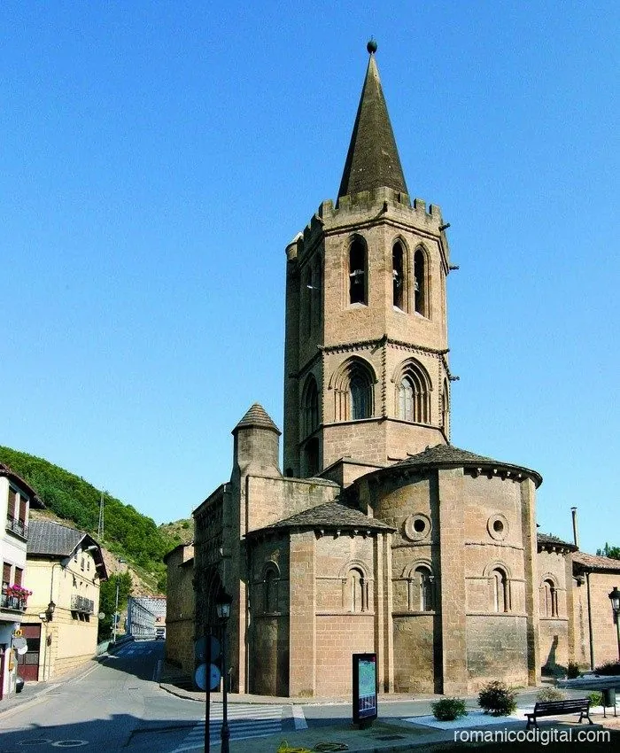
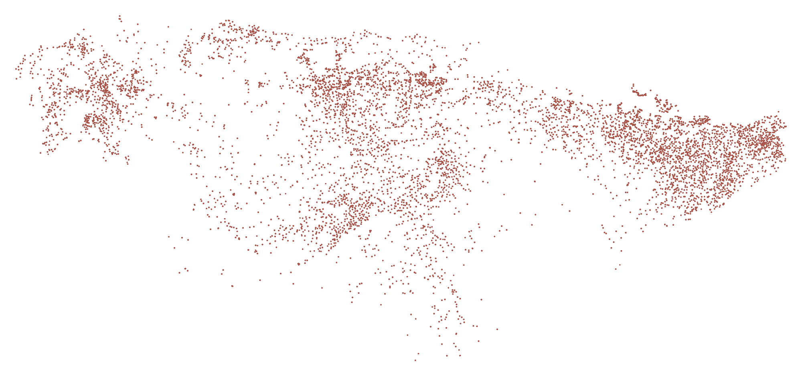
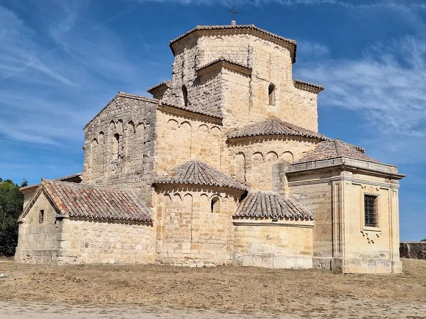

Incipit
La guía visual definitiva de las iglesias románicas de la Península Ibérica
Mil años te esperan
a la vuelta de la carretera.
Casi 7.000 iglesias, ermitas y monasterios románicos en un mapa de bolsillo. Con su datación, su historia, su estado de conservación, sus restos románicos… y el camino hasta su puerta.
Beato de Silos, c. 1100 · La mujer y el dragón, f. 147v–148 · British Library, Add MS 11695





Torres del Río · Taüll · Frómista · Eunate · Sangüesa
Folio I · El mapa
Este mapa no lleva fronteras: lo dibujan las iglesias.

Cada punto, un templo. De mediana, la siguiente iglesia está a 1,9 km.
Censo por provincias
- Lleida769
- Burgos669
- Barcelona612
- Huesca592
- Girona502
- Segovia391
- Soria387
- Lugo316
- Asturias234
- Palencia227
- y 19 provincias más2.264
- Suma6.963
Folio II · Los siglos
Cada templo, con su fecha. El siglo XII es el siglo del Románico por excelencia en España y Portugal.
Además, 71 templos prerrománicos. Filtra el mapa por siglo y viaja solo por la época que te interesa.
Folio III · La ficha
Tócala y la iglesia te cuenta su historia.
- Datación
- Primeros años del siglo XII, con posible inicio en el último cuarto del XI. Restos mozárabes reaprovechados en el muro norte.
- Construcción
- Iglesia basilical del primer románico catalán-lombardo: un trasplante único en Castilla.
- Estado de conservación
- Bueno. Restaurada y consolidada; la última intervención eliminó añadidos y recuperó su aspecto original.

- Restos románicos
- Tres ábsides semicirculares, cúpula sobre trompas en el crucero, bandas y arquillos ciegos lombardos, ventanas de arco doblado.
- Vínculos
- Sant Llorenç del Munt y Sant Jaume de Frontanyà; paralelos en Perazancas de Ojeda y en la planta de Frómista.
- Notas de visita
- Extramuros, al norte de la villa amurallada. Aislada en la llanura y visible desde la muralla.
- Planta
- Basilical
- Naves
- Tres, de dos tramos
- Ábsides
- Tres, semicirculares
- Bóvedas
- Cañón y horno
- Crucero
- Cúpula sobre trompas
- Espadaña
- Añadida en el s. XVII
Y en la app, además: fotografías, la iglesia sobre el mapa de su entorno y los comentarios de otros viajeros.
Folio IV · Cómo se usa
Busca y filtra
Por nombre, lugar o coordenadas. Filtra por siglo, estado de conservación y elementos románicos: deja en el mapa solo lo que buscas.
Acércate
El punto se vuelve icono, y el icono, fotografía con su nombre.
Lee
Su ficha completa, con el rigor de las fuentes.
Ve
Un toque y tu app de mapas te lleva hasta la puerta.
Guarda tus favoritas
Con tu cuenta gratuita, marca las iglesias que quieres ver y filtra el mapa solo con ellas.
Valora y comenta
Puntúa cada visita y deja comentarios útiles para otros viajeros: horarios, accesos, quién tiene la llave.
Folio V · Para el viajero
Peregrino
Sin cuenta · gratis
Mapa, búsqueda, fichas y navegación. Con anuncios.
Cofrade
Cuenta gratuita
Además, favoritos, valoraciones y comentarios para la comunidad.
Premium
0,99 € el primer año · después, 2,99 €/año
Sin anuncios, mapa más amplio, filtrado avanzado sobre tus favoritas y tus fotos en los comentarios.
Folio VI · Soporte y preguntas
¿Necesitas ayuda?
Cuéntanos qué dispositivo usas y, si es un error de datos o de geolocalización de una iglesia, su nombre y localidad. Respuesta habitual: 24–48 h laborables.
¿Qué es Románico Maps?
Románico Maps es una aplicación para iPhone y Android que reúne en un mapa casi 7.000 iglesias, ermitas y monasterios románicos geolocalizados, con su datación, su historia, su estado de conservación y sus restos románicos.
¿Necesito registrarme para usar la app?
No. El mapa, la búsqueda y la navegación funcionan sin cuenta. El registro gratuito añade favoritos, valoraciones y comentarios.
¿Qué incluye la suscripción Premium y cuánto cuesta?
Premium retira la publicidad, amplía el mapa, abre el filtrado avanzado sobre tus favoritas y te permite añadir tus fotos a los comentarios. Cuesta 0,99 € el primer año y, después, 2,99 € al año. Se gestiona desde la tienda de tu dispositivo.
¿Puedo usar Románico Maps para preparar rutas románicas?
Sí. Puedes buscar lugares cercanos, guardar favoritos y abrir la ubicación en tu app de mapas para organizar rutas románicas por provincias, comarcas o zonas de viaje.
¿Qué tipo de patrimonio incluye la app?
Principalmente iglesias, ermitas, monasterios, colegiatas y catedrales románicas, además de templos prerrománicos, cada uno con su ficha y su ubicación.
He visto un dato incorrecto en una iglesia
Gracias por ayudarnos a mejorar el catálogo. Escríbenos a soporte@romanicomaps.com con el nombre de la iglesia y su localidad, o deja un comentario en su ficha indicando el error. Revisamos todos.
Aquí acaba el mapa
y empieza el camino.
Acabose este códice en el año de 2026, para uso y gozo de caminantes, estudiosos y curiosos de la piedra.